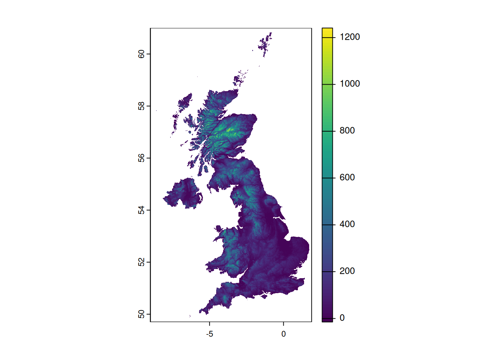
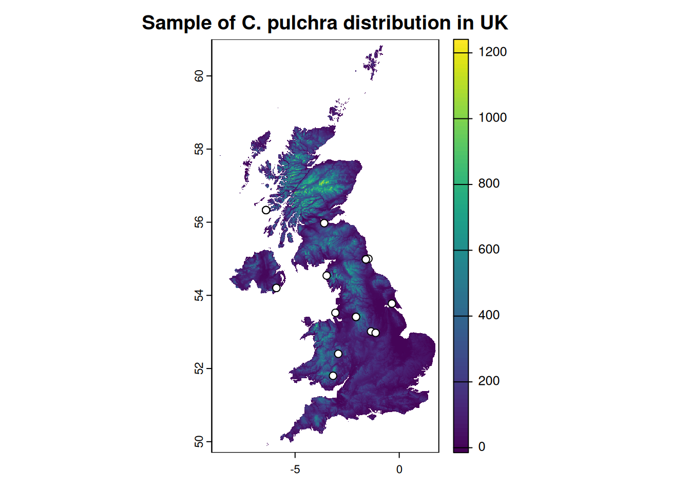

ele <- geodata::elevation_30s("United Kingdom", path = "data")
terra::plot(ele)
On the global scale there are few sources available, including:
NASA held the SRTM (Shuttle Radar Topography Mission) in 2000 (van Zyl 2001). The first set of data was released in 2005, however the regions outside the United States were sampled at 3 arc-seconds, which is 1/1200th of a degree of latitude and longitude, or roughly 90 meters on equator (Farr et al. 2007). In 2014 NASA released brand-new dataset with a resolution of 1 arc-second, or roughly 30 meters. Earth Explorer provides the data. The accuracy of the data was assessed by Smith and Sandwell (2003) and later by Rodriguez et al. (2005).
TanDEM-X (TerraSAR-X add-on for Digital Elevation Measurements) data produced by SAR interferometry was acquired in January 2015 (Krieger et al. 2013; Zink et al. 2014); the production of the global DEM was completed in September 2016. The absolute height error is within about 1 m. The TanDEM-X 90m DEM publicly available has a pixel spacing of 3 arc-seconds, similar to SRTM90. (Wessel 2018) It covers with 150 Mio sqkm all Earth’s landmasses from pole to pole. More information and data available from EOC Geoservice portal. The assessment of the data was performed by Wessel et al. (2018) and Grohmann (2018) (for part of Brasil). The 12 m and 30 m global TanDEM-X DEMs can be ordered by scientific users via a proposal submission.
For the Europe, there is a set released by Copernicus Programme named EU-DEM v1.0 (or v1.1) — it’s a digital surface model (DSM)1 of European Economic Area countries. It is a hybrid product based on SRTM and ASTER GDEM data fused by a weighted averaging approach. Detailed description of the dataset and links for download are available under their portal. Global 30 m and 90 m datasets are available worldwide with a free license.
All of the above models are characterized by a spatial resolution of 30/90 meters. If more accurate data is needed, look for national sites, where you can download (or buy) the dataset. A few examples are covered in Chapter 5.
Looking for a DEM elevation model for entire UK - not in tile form is the query on Open Data StackExchange that will be used as an example of extraction of elevation data from DTM/DEM. The initial question was:
I need to calculate the elevation of 1600 survey plots covering all of the UK - I have these formatted as a point shapefile. I have looked at the OS50 dataset but this is only available as tiles and it would take forever to process each tile individually - my points cover the entire country. Is there free-to-use raster elevation data anywhere that is not split into many tiles?
Let’s acquire and process the data. To download the SRTM rasters we can use one of elevation_xx() functions from geodata package (Hijmans et al. 2023).
ele <- geodata::elevation_30s("United Kingdom", path = "data")
terra::plot(ele)
elevation_30s() function returns an aggregated data with spatial resolution about 1 km (30 arc seconds). The data was prepared based on SRTM 90 m and supplemented with the GTOP30 data for latitudes greater than 60 degrees.
We will use species occurrence data as an example of points for altitude sampling over the UK. Sample occurrence data for Calystegia x pulchra is taken from GBIF database using rgbif package (Chamberlain et al. 2024; Chamberlain and Boettiger 2017).
occ <- rgbif::occ_data(
scientificName = "Calystegia pulchra",
country = "GB",
hasCoordinate = TRUE
)
occ <- head(occ$data, 20) |>
sf::st_as_sf(coords = c("decimalLongitude", "decimalLatitude"), crs = terra::crs(ele)) |>
subset(select = c("key", "scientificName"))Let’s add the observations to the plot:
terra::plot(ele, main = "Sample of C. pulchra distribution in UK")
occ |>
sf::st_geometry() |>
plot(pch = 21, bg = "white", add = TRUE)
Having our sample data prepared (which is class of sf, tbl_df, tbl, data.frame) we can add the elevation to the set using extract() function form terra. It requires an object of class SpatVector.
occ |>
dplyr::mutate(ele_30s = terra::extract(ele, terra::vect(geometry))$GBR_elv_msk) |>
head(5)Simple feature collection with 5 features and 3 fields
Geometry type: POINT
Dimension: XY
Bounding box: xmin: -6.393662 ymin: 52.40178 xmax: -1.35372 ymax: 56.33171
Geodetic CRS: WGS 84
# A tibble: 5 × 4
key scientificName geometry ele_30s
<chr> <chr> <POINT [°]> <dbl>
1 5198908964 Calystegia × pulchra Brumm. & He… (-2.925498 52.40178) 184
2 5215772352 Calystegia × pulchra Brumm. & He… (-2.075628 53.41154) 114
3 5292006986 Calystegia × pulchra Brumm. & He… (-6.393662 56.33171) NA
4 5762910665 Calystegia × pulchra Brumm. & He… (-1.35372 53.01439) 119
5 5231426363 Calystegia × pulchra Brumm. & He… (-5.898201 54.20297) 5Points with no value (elevation = NaN) may be caused by inaccuracy or rounding of coordinates when data is normalized by GBIF. In fact, if we checked the third point, it would turn out to be at sea.2 Elevations are given in meters.
Let’s try more accurate data for UK with 3 arcs sec resolution. Function elevation_3s(lon, lat, ...) from geodata will help to acquire all necessary tiles. To get the lon and lat parameters we will download the UK boundaries and check the bounding box.
uk <- geodata::gadm("United Kingdom", path = "data") |>
terra::project(terra::crs(ele))
bbox <- sf::st_bbox(uk)
for (x in floor(bbox[1]):ceiling(bbox[3])) {
for (y in floor(bbox[2]):ceiling(bbox[4])) {
geodata::elevation_3s(lon = x, lat = y, path = "data")
}
}Error in geodata::elevation_3s(lon = x, lat = y, path = "data"): lat >= -60 & lat <= 60 is not TRUEHmm… In fact the boundary of UK exceeds the 60° N, so, let’s modify our loop (we sacrificed the Shetland Islands, sorry):
for (x in floor(bbox[1]):ceiling(bbox[3])) {
for (y in floor(bbox[2]):60) {
geodata::elevation_3s(lon = x, lat = y, path = "data")
}
}Having all files downloaded we can build an virtual raster and work with it:
r <- list.files(path = "data/elevation", pattern = "srtm_.+.tif", full.names = TRUE)
vrt <- terra::vrt(r, "data/elevation_vrt.vrt", overwrite = TRUE) |>
terra::crop(uk) |>
terra::mask(uk)Let’s extract the elevation from our more accurate data sets:
occ <- occ |>
dplyr::mutate(ele_30s = terra::extract(ele, terra::vect(geometry))$GBR_elv_msk) |>
dplyr::mutate(ele_3s = terra::extract(vrt, terra::vect(geometry))$elevation_vrt)
occ |>
head(5)Simple feature collection with 5 features and 4 fields
Geometry type: POINT
Dimension: XY
Bounding box: xmin: -6.393662 ymin: 52.40178 xmax: -1.35372 ymax: 56.33171
Geodetic CRS: WGS 84
# A tibble: 5 × 5
key scientificName geometry ele_30s ele_3s
<chr> <chr> <POINT [°]> <dbl> <int>
1 5198908964 Calystegia × pulchra Brum… (-2.925498 52.40178) 184 180
2 5215772352 Calystegia × pulchra Brum… (-2.075628 53.41154) 114 117
3 5292006986 Calystegia × pulchra Brum… (-6.393662 56.33171) NA 17
4 5762910665 Calystegia × pulchra Brum… (-1.35372 53.01439) 119 126
5 5231426363 Calystegia × pulchra Brum… (-5.898201 54.20297) 5 48We got quite similar results regardless of resolution. On the other hand, if the your plots are located in mountainous region — the higher the raster resolution, the better.
TanDEM data is available from https://download.geoservice.dlr.de/TDM90/ service. To download the necessary data TanDEM package (Simon 2020) can be used, available on GitHub.
The original EU-DEM v1.0 (or v1.1) data can be accessed from copernicus.eu portal. It’s divided in 10x10 degree tiles, which results in quite huge files (up to 5 GB per tile). The similar data set, in smaller tiles is available from AWS Opendata Registry. Details in readme. This set can be downloaded by CopernicusDEM package (Mouselimis 2024). Please note, that this dataset is a Digital Surface Model (DSM) that represents the surface of the Earth including buildings, infrastructure and vegetation..
library(CopernicusDEM)
polygon <- sf::st_as_sf(uk)
sf::sf_use_s2(use_s2 = FALSE)
if(!dir.exists("data/copernicus")) { dir.create("data/copernicus")}
aoi_geom_save_tif_matches(
sf_or_file = polygon,
dir_save_tifs = "data/copernicus",
resolution = 30,
crs_value = 4326,
threads = parallel::detectCores(),
verbose = TRUE
)r <- list.files(path = "data/copernicus/", pattern = "Copernicus_.+.tif", full.names = TRUE)
cop <- terra::vrt(r, "data/copernicus_vrt.vrt", overwrite = TRUE)
occ <- occ |>
dplyr::mutate(ele_cop = terra::extract(cop, terra::vect(geometry))$copernicus_vrt)As the name suggests, elevatr is a package (Hollister et al. 2023) to access elevation (or tiles) data from various sources. For global coverage (outside USA) it uses AWS Terrain Tiles service. With help of get_elev_point() function obtaining the elevation is quite simple, it doesn’t require to fetch and load in any raster tiles:
occ <- occ |>
dplyr::mutate(ele_aws = elevatr::get_elev_point(occ, src = "aws")$elevation) All values extracted (or obtained) from various sources are presented in Table 4.1. Please note the difference in values, especially TanDEM-X, which is elevation not terrain model.
| key | 30s SRTM | 3s SRTM | TanDEM-X | Copernicus DEM | AWS Terrain Tiles |
|---|---|---|---|---|---|
| 5198908964 | 184 | 180 | 229.22 | 178.06 | 165 |
| 5215772352 | 114 | 117 | 165.12 | 115.99 | 127 |
| 5292006986 | NA | 17 | 69.48 | 13.65 | 9 |
| 5762910665 | 119 | 126 | 173.13 | 117.69 | 92 |
| 5231426363 | 5 | 48 | 102.35 | 39.71 | 74 |
| 5231511273 | 5 | 48 | 111.20 | 44.21 | 74 |
Digital Surface Model, not Digital Terrain Model!↩︎
There is a CoordinateCleaner package to deal with such cases.↩︎